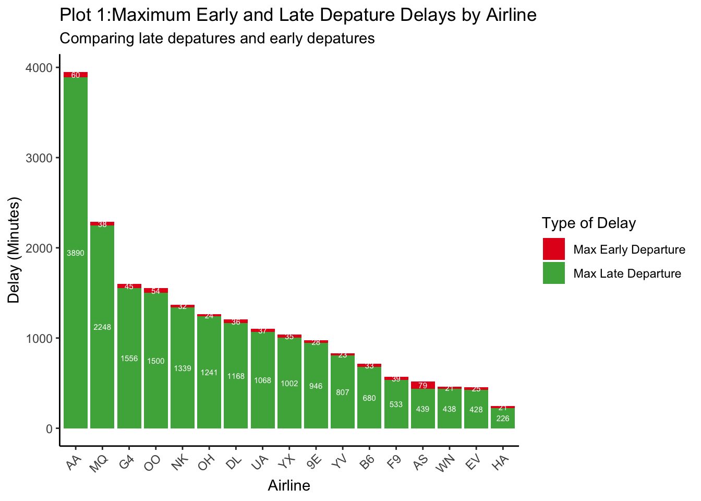
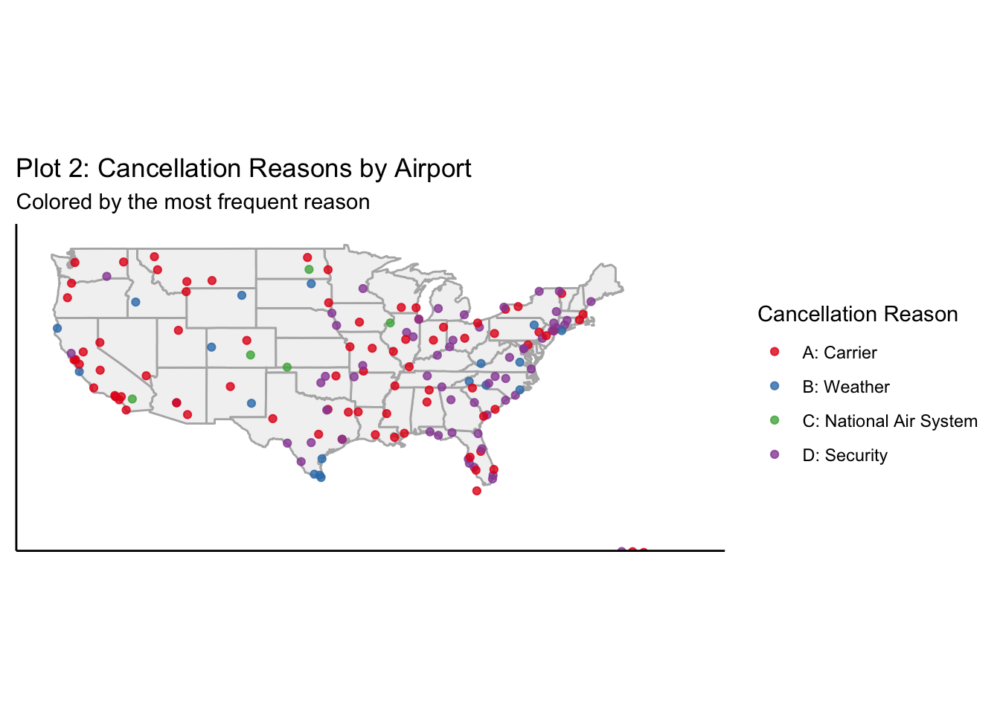
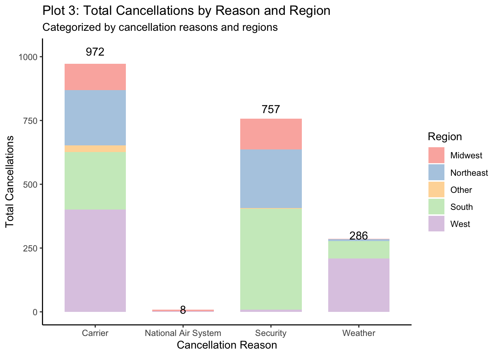
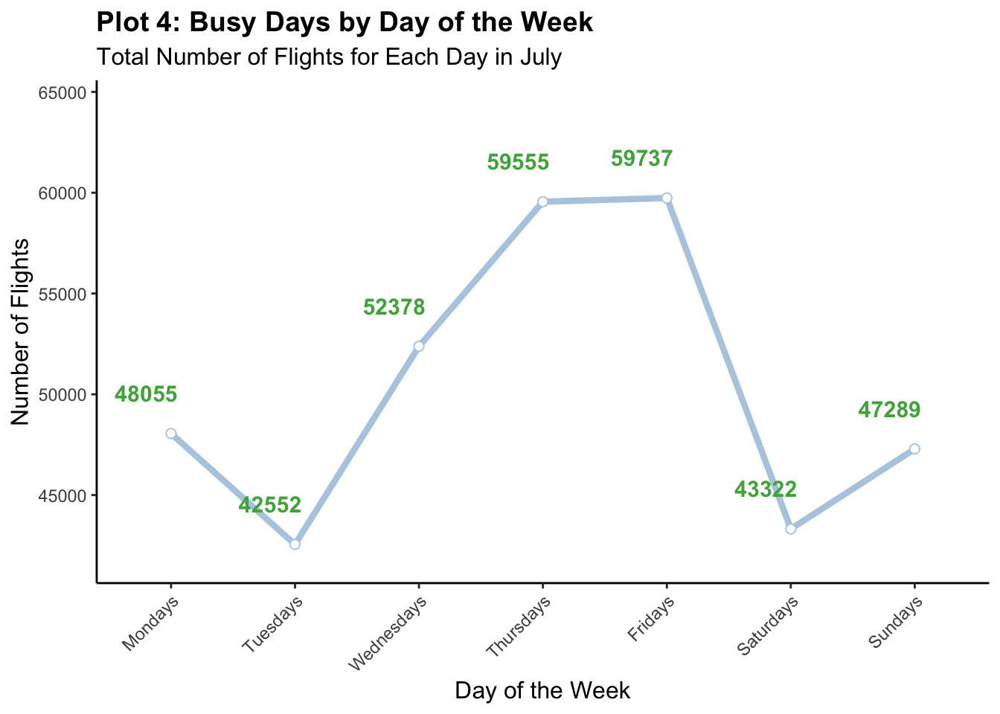

Passenger Air Travel On-time Insight Report
Introduction
Air travel has revolutionized transportation, enabling people to traverse vast distances with unprecedented speed and efficiency. In just a few hours, travelers can move from the bustling streets of New York City to sunny Los Angeles, fostering global connectivity and economic integration. However, air travel is not always as pleasant as it expects to be. Delays, cancellations, and even plane crashes all happen by some chances, causing schedule disruptives for travelers and reduced airline performances.
Therefore, in this report, using selected data from the Bureau of Transportation Statistics, I aim to examine key metrics in assessing the dynamics of aviation industry, focusing on:
Early and Delay Departure: Analyzing the max delays and early departure times for each airline.
Cancellation: Looking into key reasons for flight cancellations in most airports in the US.
Flight Trends: Assessing total flight volumes by day of the week in July 2020.
Data Description and Method
The dataset used in the analysis is retrieved from the Reporting Carrier On-Time Performance datafile under the passenger travel subject from the Bureau of Transportation website. July 2020 is being selected as the focusing month of the analysis. With 352888 rows of data, the dataset contains detailed information across the following categories:
Time Information: Year, quarter, month, day of month, day of week, flight date.
Airline Information: Airline carrier code, airline US DOT code, airline IATA code, tail number, flight number.
Origin Airport Information: Origin airport ID, origin airport name, origin airport city name, origin airport state code,and other details.
Destination Airport Information: Destination airport ID, destination airport name, destination airport city name, destination airport state code, and other details.
Departure Performance Information: Planned departure time, actual departure time, differences in planned and actual departure time, departure delay indicator, and other details.
Arrival Performance Information: Planned arrival time, actual arrival time, differences in planned and actual arrival time, and other details.
Cancellation Information: Cancelled flight indicator, cancellation code.
Airline information, departure performance, and cancellations are the key metrics in assessing the performance of airlines. The dataset is imported to MySQL for data grouping, querying, and filtering to enable efficient analysis. Subsequently, R is used for data visualizations, employing techniques such as geospatial mapping and descriptive plots.
Early and Delay Departure
Plot 1 illustrates the maximum early and late departure delays for 17 airlines, with late departures represented in green and early departures in red. The plot highlights notable disparities regarding punctuality on airline performance.
There are two outliers, American Airlines(AA) and American Eagle Airlines (MQ). AA exhibits the worst performance on late departures, with a maximum delay of 3890 minutes, and also shows the one of the highest early departures, reaching 60 minutes. MQ ranks second on the chart with the maximum late departure of 2248 minutes. For the remaining of the 15 airlines, they are well within the 500 to 1500 minute range for late departures and have negligible early departures. Hawaii Airlines (HA) is the best airline in terms of punctuality.
Airlines with extreme delay instances should investigate the root causes. Addressing outliers can significantly improve the overall airline performance and customer satisfactions. While plot 1 yields actionable insights, the analysis could be largely complemented by examining average early and delayed departures by minutes for each airline, which may offer a more comprehensive picture of the on-time performance.
Cancellation by Reasons and Regions


This section analyzes flight cancellations across the United States based on the most frequent cancellation reason at each airport. The analysis aggregates the top cancellation reasons per airport and examines their regional distribution.
Plot 2 visualizes the most frequent reasons for flight cancellations at airports across the United States, grouped into four reasons: Carrier-related, Weather-related, National Air System, and Security. Carrier-related reasons spread across the country, and Security-related cancellations are centered on the South and East. Counterintuitively, weather doesn’t appear as a big issue in the plot, likely due to the dataset’s focus on the summer month, a period with fewer weather disruptions compared to winter.
Plot 3 illustrates the total counts of each cancellation, colored by region. Carrier-related issues account for the majority of cancellations, totaling 972 incidents across all regions. These issues are most pronounced in the South and Midwest, which could possibly imply operational inefficiencies or staffing shortage. Security, ranked second with 757 incidents, highlights the need to continuously strengthen security protections at key airports. The National Air System reason is negligible. Weather disproportionately affects west and south, indicating regional vulnerability to geographic and seasonal factors.
Airlines should prioritize improving resource allocation, staffing, and scheduling to reduce cancellations caused by carrier inefficiencies. And airlines should work together with airports in the West and South to prepare various weather situations and contingency plans.
Flight Trend

This section analyzes the total number of flights for each day of the week in July 2020 to identify patterns of flight activity. Plot 4 highlights changes in flight traffic on different days, revealing the busiest and least busy days for air travel. Friday presents to be the busiest day in July 2020, with 59737 number of flights in total, closely followed by Thursday with 59555 number of flights. The busy traffic on Thursdays and Fridays indicate that passengers travel a lot to prepare themselves for the weekend. Tuesday and Saturday are the least busiest days of the week, with volumes of 42552 and 43322 respectively. Flight numbers grow sharply from Tuesday to Wednesday to Thursday, suggesting a high demand on air travel in the mid-week.
In order to coordinate busy midweek traffic, airlines should increase staffing and resources on those days to ensure smooth operation of high demand. Airlines could also offer discounted tickets on less busy days to counterbalance the difference in demand during the week.
Conclusion
This report provides a comprehensive evaluation of key performance metrics for the U.S. aviation industry in July 2020, focusing on departure delays, flight cancellations, and weekly flight trends.
The analysis reveals significant disparities in punctuality among airlines, with notable outliers such as American Airlines and American Eagle Airlines experiencing extreme delays. Addressing these outliers through targeted interventions could significantly enhance overall airline performance and customer satisfaction.
Cancellation analysis identifies carrier-related issues as the leading cause, emphasizing the need for airlines to improve operational efficiency and resource allocation. Additionally, weather-related cancellations highlight the importance of regional preparedness and contingency planning.
Flight trends suggest a surge in demand during midweek and weekends, particularly on Thursdays and Fridays. Airlines should optimize staffing and resources to accommodate high-demand days while exploring strategies such as discounts on less busy days to balance demand.
By implementing these data-driven recommendations, airlines and airports can enhance operational efficiency, reduce disruptions, and elevate passenger experience.